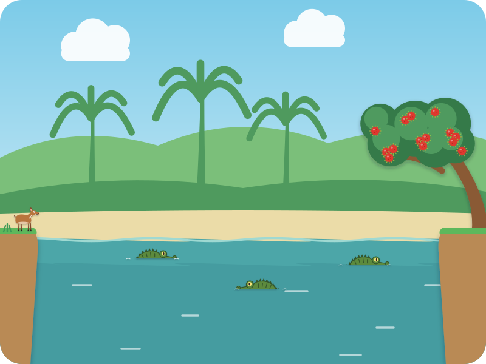
A trickster tale from Malaysia & Indonesia
Mouse-deer and the Crocodiles
"Story, story — are your ears open?" Kai: "Open!"
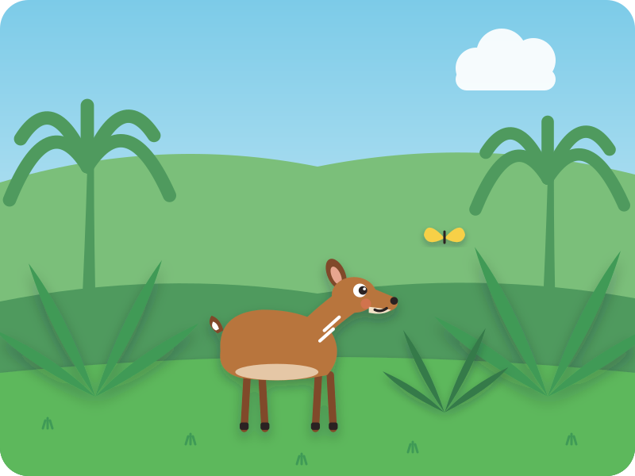
Deep in the green jungle lived Kancil, the mouse-deer.
Kancil was tiny: no bigger than a rabbit, with legs as thin as pencils. But oh, he was clever!
Wherever he went, he went Hop! Hop! Hop! Kai hops his fingers
One day Kancil saw a rambutan tree on the other side of the river, full of red, ripe, hairy fruit. Yum!
But the river was wide, wide, wide. Too wide to jump, and too deep to swim.
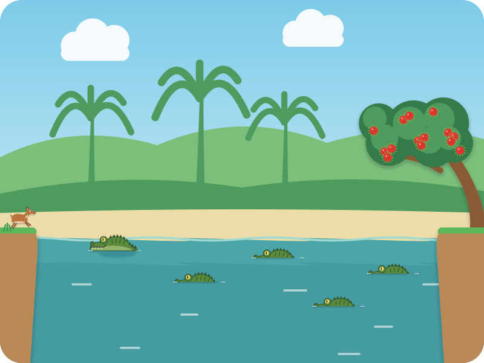
Then — bloop, bloop, bloop! — bumpy eyes popped up out of the water. Crocodiles!
"Mmm," said the crocodiles. "A little mouse-deer for lunch!"
Kancil hopped back from the edge. He had to think fast.
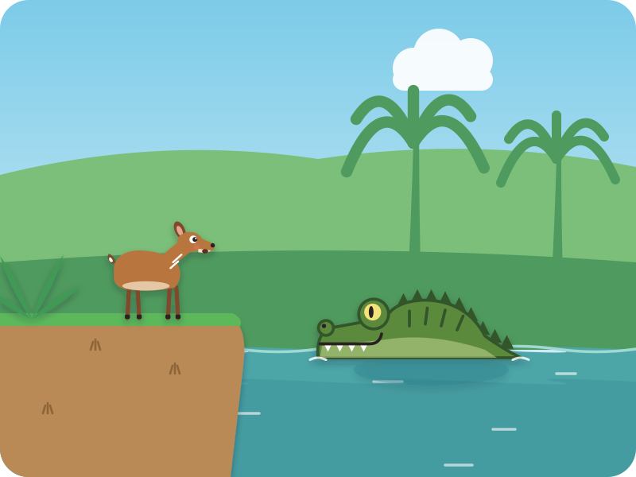
"Good morning, Crocodile!" said Kancil, in his biggest voice. "The King has sent me. He wants to know how many crocodiles live in this river!"
"The King?" said the crocodile. "Oh my!"
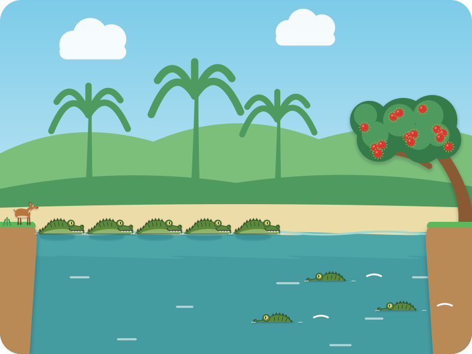
"Everybody, come!" called the crocodile. "Line up across the river, from this side to that side, nose to tail!"
Splish, splosh! The crocodiles swam into a long, long line.
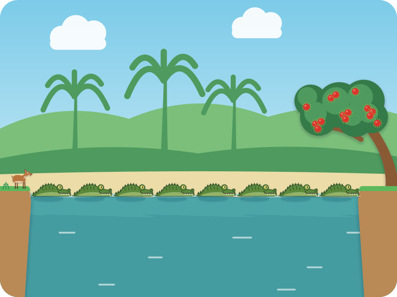
Now there was a crocodile bridge, all the way across!
"Thank you," said Kancil. "Now hold still while I count you." "Hold still!" Kai freezes like a crocodile
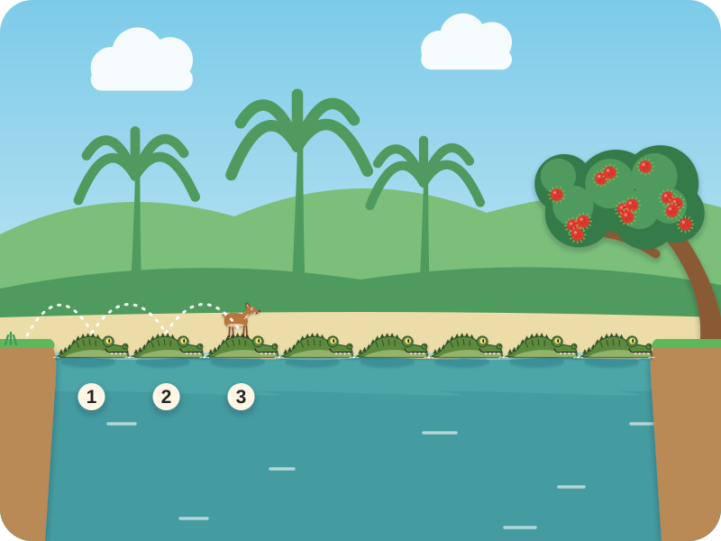
Kancil hopped onto the first crocodile. Hop! Hop! Hop!
"One! Two! Three!" Kai counts with Kancil
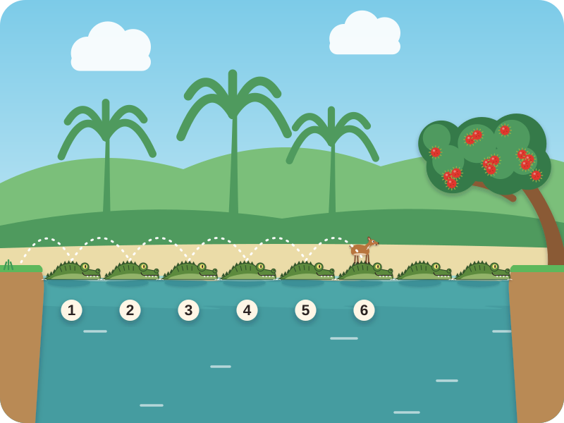
Hop! Hop! Hop! "Four! Five! Six!" Kai counts
The crocodiles held very, very still. They wanted the King to know just how many they were.
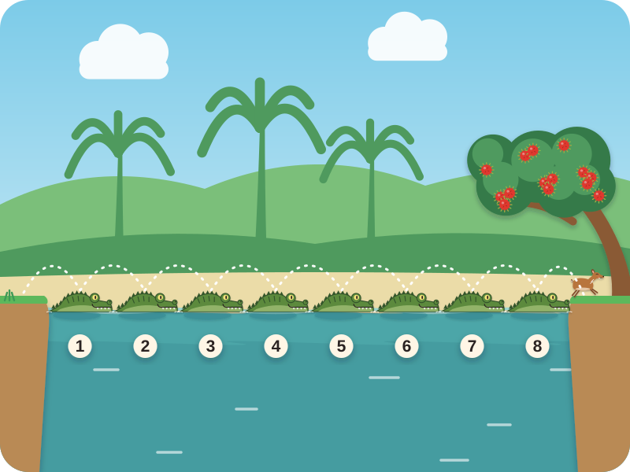
Hop! Hop! "Seven! Eight!" Kai counts
And with one last big HOP, Kancil landed on the other side of the river. "Eight crocodiles!"
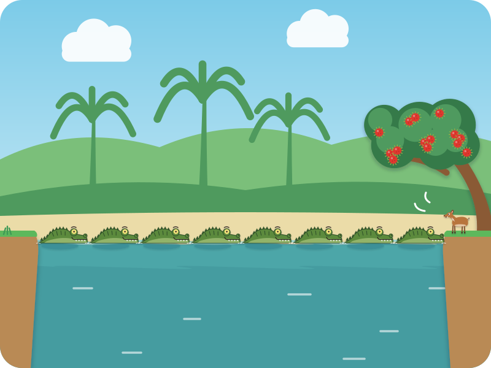
"Thank you, crocodiles!" called Kancil. "I don't really need a number. I just wanted to cross the river!"
The crocodiles' eyes went very wide. "Oh! He tricked us!"
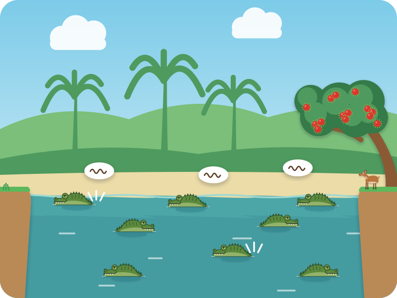
The crocodiles splashed their tails. "Grumble, grumble, grumble…" Kai grumbles like a crocodile
Then they swam away to sulk in the mud. Nobody was hurt — just a little bit fooled.
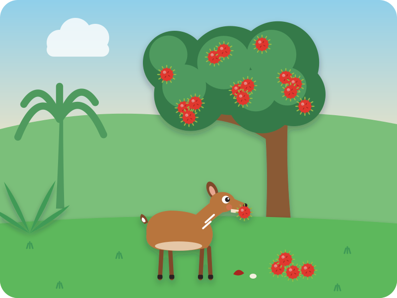
Under the rambutan tree, Kancil ate sweet, juicy rambutans until his tummy was round. Munch, munch!
He was the tiniest one in the jungle — but he was the cleverest! Hop! Hop! Hop!
The End
"Snip, snap, snout — this tale's told out."
Swipe back to read it again
Driving? Tell it without the page · six beats
The picture book is for home, bedtime, or a passenger. In the car, tell it from memory — bold is Kai's part.
- Kancil the mouse-deer is the tiniest animal in the jungle, but the cleverest. He goes Hop! Hop! Hop!
- He wants the red rambutans on the other side of the river, but the river is too wide, and it's full of crocodiles who want him for lunch.
- Kancil thinks fast: "The King has sent me! He wants to know how many crocodiles live in this river."
- The crocodiles line up across the river, nose to tail, and hold still: "Hold still!"
- Kancil hops across their backs, counting: "One! Two! Three! Four! Five! Six! Seven! Eight!" and with one last HOP he's on the other side.
- "I don't need a number. I just wanted to cross!" The crocodiles go "Grumble, grumble" and swim off, and Kancil eats rambutans: munch, munch!
After the story · car-friendly wondering
"Can you count eight hops with your fingers? One, two, three…"
"Why did the crocodiles hold so still?"
"Kancil was tiny but clever. What clever idea would you use to get across a river?"
Where this story comes from
Kancil, or Sang Kancil ("Sang" is an old Malay honorific, a bit like "Sir"), is the mouse-deer trickster of folk tales told across Malaysia and Indonesia. Mouse-deer are real: tiny, shy hoofed animals of Southeast Asian forests, about the size of a rabbit, with no antlers. "Kancil" and "pelanduk" are both Malay words for them. In the old stories the smallest animal outwits the tigers, crocodiles and elephants. The crocodile-counting trick is one of the best-known Kancil tales and is still taught to children in both countries. We know the stories mainly from oral telling and many modern retellings. There are also old written versions: the British Library holds Malay manuscripts of the Hikayat Pelanduk Jenaka ("The Tale of the Clever Mouse-deer") copied in Penang or Kedah around 1805, about a mouse-deer who wins the respect of the forest animals. We haven't checked which episodes those manuscripts contain, so we don't claim the crocodile trick comes from them. Versions differ. In some, Kancil says the order to count comes from King Sulaiman (Solomon); in others the King is planning a feast and needs to know how many guests are coming; and why Kancil wants to cross changes too. Our rambutan tree is our own picture-book choice. Many tellings end with the crocodiles angry and Kancil gloating from the far bank. This retelling is our own, for a 4-year-old: the crocodiles just grumble and swim off, and nobody is hurt. Japan has a close cousin in the "White Hare of Inaba," a tale in the 8th-century Kojiki in which a hare crosses the sea on the backs of wani (sharks or crocodiles) by pretending to count them.